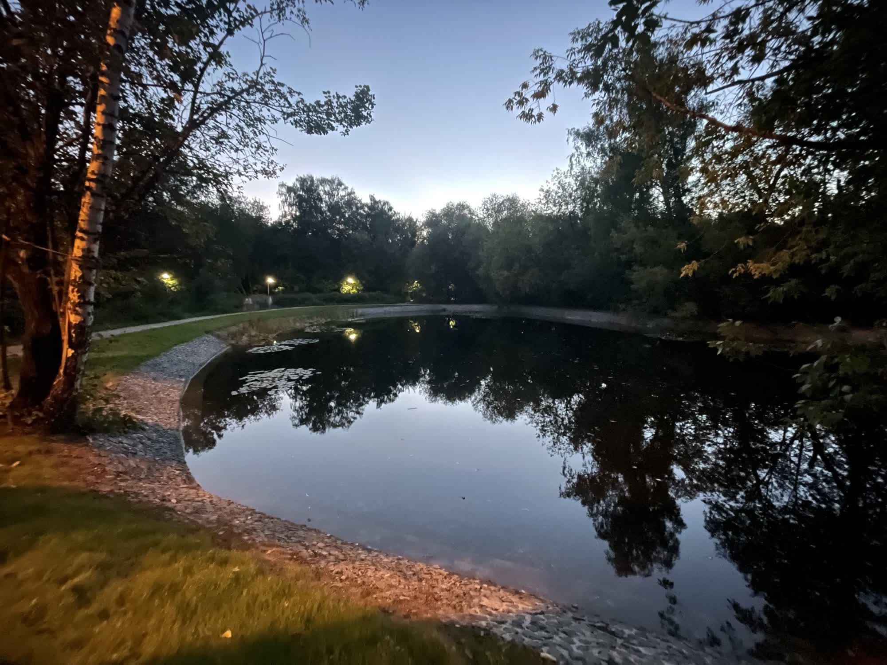
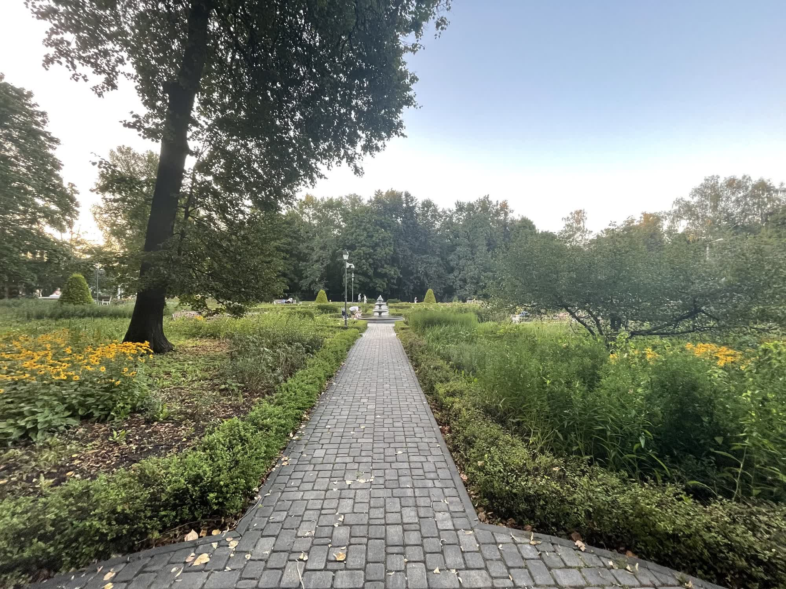

Фото



Парк «Сокольники» — старейший парк Москвы, расположенный на северо-востоке города. Своё название он получил от царских соколиных охот, которые проходили здесь в XV–XVII веках по указу царя Алексея Михайловича.
На протяжении столетий Сокольники были местом отдыха — от шумных празднеств Елизаветы Петровны и прогулок Екатерины II до коронационных торжеств Александра I.
Природа парка вдохновляла художника Алексея Саврасова и композитора Петра Чайковского.
Сегодня это один из самых посещаемых парков Москвы, сочетающий исторические аллеи с современной инфраструктурой для отдыха и спорта.
© Все права защищены.